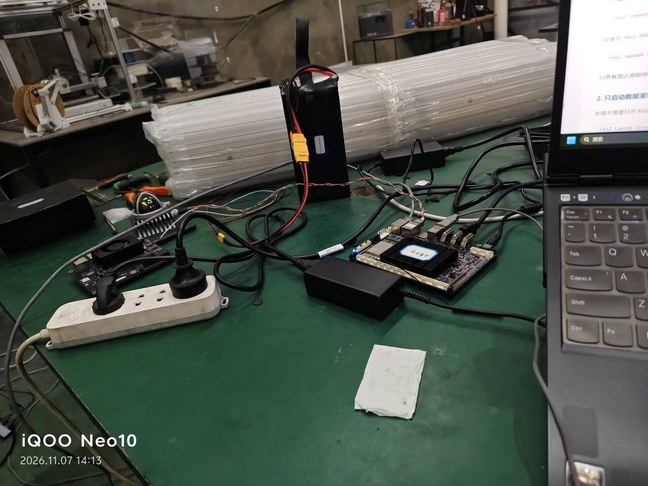
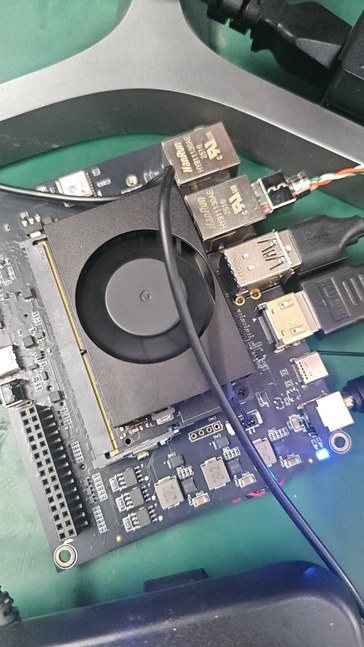
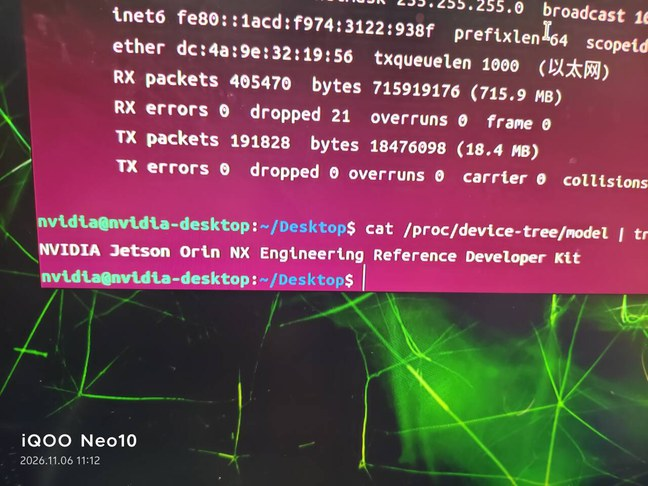
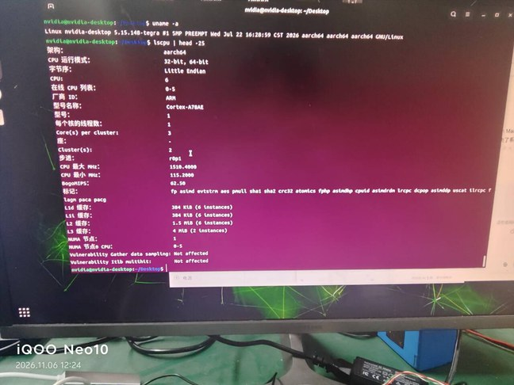
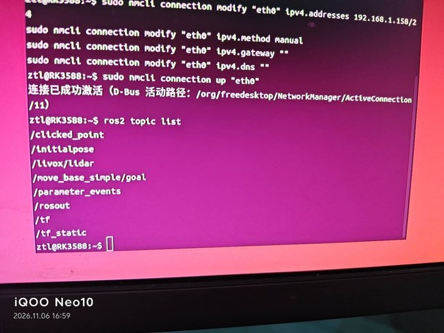
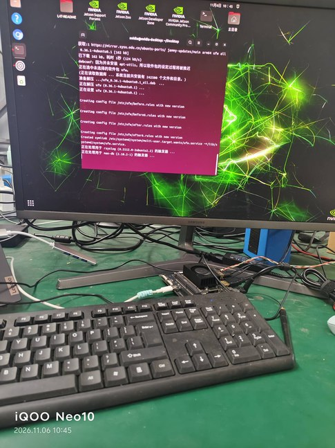
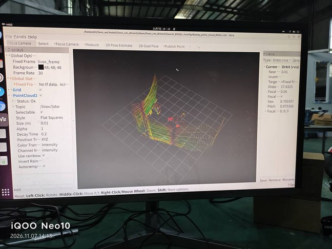
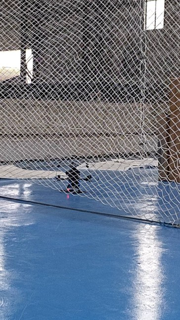

实习报到的第一件事，不是看论文，也不是写算法，是把一台激光雷达接到板子上， 让屏幕上出现一片点云。
听起来是「装个驱动、跑个 launch」的量级。实际花掉两周，而且 卡住的地方一件都不在代码里——全在网段、IP、配置文件读的是哪一份、 以及板子到底是什么型号这几件很土的事情上。
这两周手上经过的东西：一台 Livox Mid-360S（3D 激光雷达，以太网输出， DC 9~27 V 供电）、一块 Jetson Orin NX、一块 RK3588， 外加一块给雷达供电的电池包。 最后留下来干活的是 RK3588；Jetson 那条路走到一半被换掉了。 桌面上的常态是这样：

一、先搞清楚这块板子到底是什么
拿到 Jetson 之后我没有立刻装东西，先问了一句「它到底是谁」。
这不是谨慎，是被逼的：网上随便一篇 ROS 2 教程都默认你是 x86 桌面，
在 ARM 板子上照抄，第一步 apt install 就会给你一点颜色看看。

三条命令就够把它问清楚：
$ uname -a Linux nvidia-desktop 5.15.148-tegra #1 SMP PREEMPT ... aarch64 aarch64 aarch64 GNU/Linux $ cat /proc/device-tree/model NVIDIA Jetson Orin NX Engineering Reference Developer Kit $ lscpu 架构： aarch64 型号名称： Cortex-A78AE CPU(s)： 8

5.15.148-tegra 这个后缀 + aarch64，两件事同时成立，
就基本锁定了这套系统是 JetPack 6 / Ubuntu 22.04 / ROS 2 Humble 这一档。
上面那段 RX packets 405470 / 715.9 MB 是网卡的累计收包——
雷达数据流进来之后这个数字会持续涨，是个不用装任何工具的心跳指标

lscpu 再看一遍核数与缓存。这台是 8 核 Cortex-A78AE，
后面跑点云和 SLAM 的时候，这个数决定了能同时开几个进程、
make -j 敢开多大
为什么值得单独占一节：Jetson 的镜像、L4T 内核版本、CUDA、 ROS 发行版、以及「这个包有没有 aarch64 版本」，是绑死在一起的一串。 把型号先钉死，后面所有「装不上」的报错才有得查—— 你会先怀疑版本不匹配，而不是先怀疑自己敲错了命令。
二、这台 Jetson 最后被换掉了
型号确认完、ROS 2 也装上了，问题出在网络这一层。
想看网卡到底是什么型号，敲 lspci，直接回一句「未找到命令」——
这个镜像里连 pciutils 都没装。装上之后才看清这台的网络配置：
$ lspci | grep -i network
0007:01:00.0 Network controller: Realtek Semiconductor Co., Ltd. RTL8822CE 802.11ac PCIe Wireless Network Adapter
$ lspci -nn | grep -i net -A 3
0001:01:00.0 Ethernet controller [0200]: Realtek Semiconductor Co., Ltd.
RTL8111/8168/8411 PCI Express Gigabit Ethernet Controller [10ec:8168] (rev 05)
Subsystem: Realtek Semiconductor Co., Ltd. RTL8111/8168 PCI Express Gigabit Ethernet controller [10ec:8168]
Kernel driver in use: r8168
Kernel modules: r8168
iw dev wlan0 get power_save 直接返回
command failed: No such device (-19)——无线设备根本没被认出来。
有线是 Realtek RTL8111/8168，走 r8168 驱动。顺手说一句：
-19 是 ENODEV，这个错误码在别的地方又见过一次
为什么这件事很要命：雷达吐的是10 Hz、几十 Mbps 的连续 UDP 流， 不是「偶尔发一个包」。网卡驱动这一层只要不干净，表现不是「连不上」， 而是能 ping 通、能出几个话题、然后点云时有时无。 这种「半通不通」比彻底不通难查得多——你分不清是自己配置错了，还是它本来就这样。
这台机器的结局是被换掉。换板子不是技术结论，是效率判断： 同样的时间花在跟驱动较劲上，不如换一块本来就没有这个问题、而且当天就能跑通的板子。
三、换到 RK3588，第一步还是把网络弄通
换板之后没有新流程，还是老一套：供电 → 网线 → 两边 IP 同网段 → ping 通。 区别是这一次每一步一次过。
Mid-360S 走以太网口往外吐数据，UDP，固定端口 56100~56500 那一档。 它没有「自动发现」这回事，两边 IP 不在一个网段，就是一点数据都没有。 ping 不通之前，装什么驱动都是空转。
配 IP 用的是 nmcli，不是 ip addr add：
# 把有线网卡设成 192.168.1.150/24 这个地址
sudo nmcli connection modify "eth0" ipv4.addresses 192.168.1.150/24
sudo nmcli connection modify "eth0" ipv4.method manual
sudo nmcli connection modify "eth0" ipv4.gateway ""
sudo nmcli connection modify "eth0" ipv4.dns ""
sudo nmcli connection up "eth0"
为什么不用 ip addr add：那条命令改的是内核里的运行时状态，
重启、拔插网线、甚至 NetworkManager 自己刷新一下就可能没了。
调试期一天要重启板子七八次，用临时命令就得每次重敲一遍，
迟早在某一次漏掉，然后花半小时怀疑是网线坏了。
nmcli 写进的是 NetworkManager 的连接配置，重启后还在。
配上之后，ip addr 里能看到地址真的挂上了，再看话题列表：

ros2 topic list
里出现了 /livox/lidar——这一行出现，说明驱动收到了 UDP 包并且转成了 ROS 2 话题。
同一天上午还在 Jetson 上装 ROS 2，下午这里就通了注意这一屏里没有
/livox/imu。当时觉得点云能看就行，
到要接 FAST-LIO2 才发现 IMU 是必需的，这是后面才补上的
两个容易踩的细节，都不像技术问题：
-
网卡名未必是
eth0。 台式机上常见enp108s0、eno1，用ip addr看真名。 而且输出里接口名后面那个冒号只是排版，不是名字的一部分，别一起复制进命令。 -
ping 得通不代表数据走对了网卡。
板子同时开着 WiFi 和有线时，系统可能把去
192.168.1.x的包从 WiFi 送出去。 雷达的数据包进来了，但驱动绑定的是另一张网卡的 socket——照样收不到。
四、ROS 2 先落地，然后 SDK 和驱动，顺序不能反
版本是定死的：Ubuntu 22.04 对应 ROS 2 Humble，没有选择的余地。
装的是 ros-humble-desktop，不是 ros-base——
虽然 base 更小，但后面要用 RViz 看点云，缺了再补一遍更麻烦。

rviz2 的配置文件被创建、
/usr/bin/rviz2 挂了软链接——这条线走通了，后面才有「看点云」这一说
真正有顺序要求的是 Livox 那两层，名字很像，作用完全不同：
| 组件 | 是什么 | 依赖关系 |
|---|---|---|
Livox-SDK2 |
底层通信库，负责和雷达讲协议、收 UDP、解包 | 要先装，装到 /usr/local |
livox_ros_driver2 |
ROS 2 驱动节点，调 SDK2 把数据转成 ROS 话题 | 编译时链接 SDK2，必须先装好 SDK2 |
顺序反了，表现是在 cmake 阶段报找不到 Livox 的头文件和库——
不是编译到一半失败，是连配置都过不去。这个报错已经足够明确，不算坑。
真正的坑在装完之后运行时：
# SDK2 装好、驱动也编好了，一启动就挂 error while loading shared libraries: liblivox_lidar_sdk_shared.so # 库确实在，只是动态链接器不知道去 /usr/local/lib 找 $ ls /usr/local/lib | grep livox $ echo 'export LD_LIBRARY_PATH=$LD_LIBRARY_PATH:/usr/local/lib' >> ~/.bashrc $ source ~/.bashrc
sudo make install 把 .so 放进 /usr/local/lib，
但这个目录不在默认的运行时搜索路径里（在 ldconfig 的配置里才算）。
编得过、装得上，跑起来说找不到——这一课在这两周出现过不止一次。
驱动本身用官方的 build.sh humble 编，不用自己拼 colcon 参数：
里面已经把这个版本对 ROS 2 Humble 的兼容处理写好了。
但编的时候建议加一个参数：
cd ~/livox_ws colcon build --symlink-install source install/setup.bash
--symlink-install 的作用是让 install/ 里的文件变成源码目录的软链接，
改配置立刻生效。这个参数在下一节会救一次命。
五、json 里最容易填错的一格：host_ip
MID360s_config.json 是整个接入过程里唯一需要手写的地方，
里面真正会出错的就那么几格：
| 字段 | 填什么 | 填错的后果 |
|---|---|---|
host_ip |
雷达能看到的那张网卡的 IP，如 192.168.1.150 |
驱动绑错网卡，收不到 UDP；topic 有，hz 是 0 |
lidar_configs[].ip |
雷达自己的 IP | 完全连不上，和没插网线一样 |
pcl_data_type |
1（常用） |
点云的字段布局不对，下游算法读出来是乱数 |
pattern_mode |
0，非重复扫描 |
扫描图案变了，建图效果和预期不一致 |
extrinsic_parameter |
验证阶段全填 0 | 见第七节，填错会让点云整体歪掉，且很难看出是谁的错 |
host_ip 这一格是所有坑里最隐蔽的。它不会报错：
驱动正常启动，日志正常打印，ros2 topic list 里
/livox/lidar 老老实实躺着，看起来一切正常。
但 ros2 topic hz /livox/lidar 是空的——
因为驱动在「我以为的那张网卡」上等数据，数据却从另一张网卡进来了。
判断方法不需要猜：驱动启动日志里会打出它绑定到了哪个地址，
对照 ip addr 看那个地址属于哪张网卡，
再看 ip route 里到雷达网段的出口是不是同一张。
两边一致，才算真的通了。
src/livox_ros_driver2/config/ 和
install/livox_ros_driver2/share/.../config/ 是两份。
运行时加载的是 install 那一份。
普通 colcon build 之后它就是一份拷贝，改源码不重编等于没改。确认办法：
grep -n "user_config_path" 查 launch 文件里指向的路径，
或者干脆 --symlink-install 重编一次，从此只有一份。
六、launch 选哪个，决定了话题里装的是什么
驱动目录下的 launch 文件看着很多，其实只分两类， 区别不在「开不开 RViz」，而在发出来的消息类型：
| launch | /livox/lidar 的消息类型 | 能用来干什么 |
|---|---|---|
rviz_MID360_launch.py |
sensor_msgs/PointCloud2 |
RViz 直接显示；大多数点云处理工具都能吃 |
msg_MID360_launch.py |
Livox 自定义 CustomMsg |
FAST-LIO2 这一路只认这个，RViz 默认显示不了 |
「先跑 rviz_* 看点云、确认硬件通了」是对的，
但要知道这一步验的是链路，不是算法要的接口。
我第一次跑通时挺高兴，直到发现后面要接的 SLAM 吃的是另一种消息——
同一个 /livox/lidar 话题名，里面的东西不是一个格式。
这也解释了一个常见困惑：ros2 topic list 里名字一样，
为什么换个 launch 之后下游节点就报「消息类型不匹配」。
名字是给人看的，类型才是契约。
七、点云亮起来的那一下，以及三个参数
启动之后 RViz 里什么都没有，是最常见的一步。
大多数时候不是没数据，是坐标系对不上：
RViz 的 Fixed Frame 默认是 map，
而这时候系统里根本没有 map，也没有任何 TF——雷达的 livox_frame 是一座孤岛。
把 Fixed Frame 改成 livox_frame，点云立刻出来：

Decay Time 0.2 让最近 0.2 秒的点留在屏幕上叠加，
Alpha 0.1 压低不透明度避免糊成一片白，
Color Transformer: Intensity 按反射率上色。
雷达还架在桌上没上机，能看出的只是房间一角
再录一段动态的，看它到底在出什么：
Alpha 调到了 1——
和上面那张截图（0.1）不一样，是不同时刻试的参数，
这几个值是看着效果调的，没有唯一正确答案
三个参数为什么这么给，值得记一下——它们不是随便调的：
- Decay = 0.2 秒，而不是 0。 一帧只有几万个点，单帧看是稀的。让它保留 0.2 秒，就是十几帧叠在一起， 形状才连得起来。但它也是假的清晰：物体动起来会有拖影， 所以调参时看动态物体，别被 Decay 骗了。
- Alpha 在 0.1 到 1 之间试。 点云在近处会极度密集，完全不透明就是一片惨白，压下去才有层次； 但如果只是想确认「有没有点」，调到 1 反而最直观。
- 按 Intensity 上色，不是按高度。 强度是回波反射率：白墙弱、金属和反光物体强。 按高度上色只能看出「哪里高」，按强度能直接看出材质， 排障时更容易发现「这块区域怎么一点返回都没有」。
八、外参：同一个角度只能补一次
这是这两周里唯一一个不会报错、但会让后面全部白做的地方。 系统里有三处可以写「雷达装在哪、朝哪个方向」，作用完全不同：
| 写在哪 | 改变的是什么 | 会不会发布 TF |
|---|---|---|
MID360s_config.json 的 extrinsic_parameter |
驱动吐出来的点的坐标本身 | 不会 |
ROS TF（static_transform_publisher） |
两个坐标系之间的换算关系，点云本身不动 | 会 |
算法里的 extrinsic_T / extrinsic_R |
算法内部认为的雷达到机体/IMU 关系 | 不会 |
问题就出在这三处都能补同一个角度。雷达前倾 30 度， 你在 json 里补 30 度、又在 TF 里补 30 度，结果就是补了 60 度。 点云看起来「好像有点歪」，但歪得不多，很容易被当成标定误差放过去。 等到飞起来，轨迹是斜的，那时候再回头找，代价就大了。
九、真正卡住时间的六个地方
按实际卡住的顺序排，全部是配置和网络，没有一个是代码写错：
| # | 现象 | 当时的判断 | 实际原因 | 怎么确认 |
|---|---|---|---|---|
| 1 | ping 不通雷达 | 网线/雷达坏了 | 电脑这边根本没配同网段 IP，或者配在了另一张网卡上 | ip addr 看地址挂在哪张卡 |
| 2 | ping 通了，但 topic hz 是 0 |
驱动没装好 | host_ip 填的不是雷达那张网卡的地址 |
驱动日志里的绑定地址 vs ip route 的出口 |
| 3 | 改了 json，行为一点没变 | 驱动不读这个文件 | 运行时加载的是 install/ 里的旧副本 |
grep user_config_path 看 launch 指哪；或 --symlink-install |
| 4 | 有话题，RViz 里空白 | 点云格式不对 | Fixed Frame 还是默认的 map，系统里没有这个坐标系 |
改成 livox_frame（此时雷达就是原点） |
| 5 | 启动报 liblivox_lidar_sdk_shared.so 找不到 |
SDK 没装 | 库装到了 /usr/local/lib，不在运行时搜索路径 |
ldconfig -p | grep livox、echo $LD_LIBRARY_PATH |
| 6 | 点云很卡，RViz 拖不动 | 板子算力不够 | 默认按 10 Hz 全量发点，显示跟不上 | 先把 publish_freq 降到 5.0 试，能流畅就说明是带宽/渲染，不是算力 |
这六条里，第 1、2、3 条有一个共同点：系统不报错。
不报错的失败最贵——因为它不给你任何方向，你只能自己想一个假设、
验一次、推翻、再想一个。所以后面我改了个习惯：
每接一个新外设，先把「数据到了哪一层」问清楚——
网线上有没有包（ifconfig 的 RX 在不在涨）、驱动有没有绑对地址、
话题有没有发布频率、RViz 里坐标系对不对。
这四层里任何一层断了，都能单独确认，不用一次猜一个大的。
十、还没做的，和为什么先不做
点云出来只是这条链的第一环。明确还没做的有四件：
-
TF 树还没建。
现在
livox_frame是孤立的，没跟base_link/body连起来。 这一步要等雷达真正装到机身上、量出安装位置之后再做—— 现在建了也是错的。 -
还没上机飞。
这两周所有点云都是雷达架在桌上打的。飞机还在地上：

室内飞场，四周围着防护网。下次进这里，雷达应该挂在上面那台机器上，而不是摆在桌上 -
没录 rosbag，也没跑 SLAM。
要跑 FAST-LIO2，得先换成
msg_*那个 launch（发CustomMsg）， 再把/livox/lidar和/livox/imu一起录下来。 现在 IMU 话题刚补齐，还没做这件事。 - 外参没标定。 验证阶段 json 里是全 0，这是故意的。真实安装角度要等雷达固定到机体上再量。
十一、下一步
按依赖顺序，接下来该动的就四步，跳步会返工：
| # | 做什么 | 完成的标志 |
|---|---|---|
| 1 | 雷达固定上机，量出相对机体的位置和角度 | 有一组能写进配置的数字，不是「大概在正中间」 |
| 2 | 建 base_link → livox_frame 的静态 TF |
tf2_echo 能查到，且 RViz 里固定 frame 换成 base_link 后点云正常 |
| 3 | 换 msg_* launch，录第一份 bag |
bag 里 /livox/lidar 是 CustomMsg，/livox/imu 有数据 |
| 4 | 用录好的 bag 离线跑一遍 FAST-LIO2 | 能从 bag 重复播，建出的图每次一样——先离线跑通，再谈上机 |